All content © 2016 Yongwoo Song (except where otherwise noted) Some rights reserved.
All content © 2016 Yongwoo Song (except where otherwise noted) Some rights reserved.Licensed under a Creative Commons Attribution-NonCommercial-ShareAlike 3.0 Unported License
We have found that while fab acadmey students first learn how to use Eagle and make their first hello-echo board from their assignment, they like to make modification of their board rather than making simple rectangular shapes.
Making custom outlines for PCB is done in a few steps via vector drawing tools.
Think about the actual size of the board and make sure that traces aren't interfered by outlines you create with illustrator.
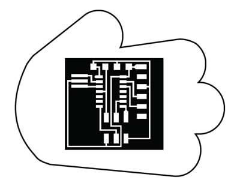
When doing import command in Eagle, produces only straight lines as output- any curves might seem just straight lines. To fix this problem, add extra anchor points/nodes to the shape (Object > Path > Add Anchor Points). Add enough until you feel like number of points/nodes are sufficient to descirbe the shape. Look at the image below.
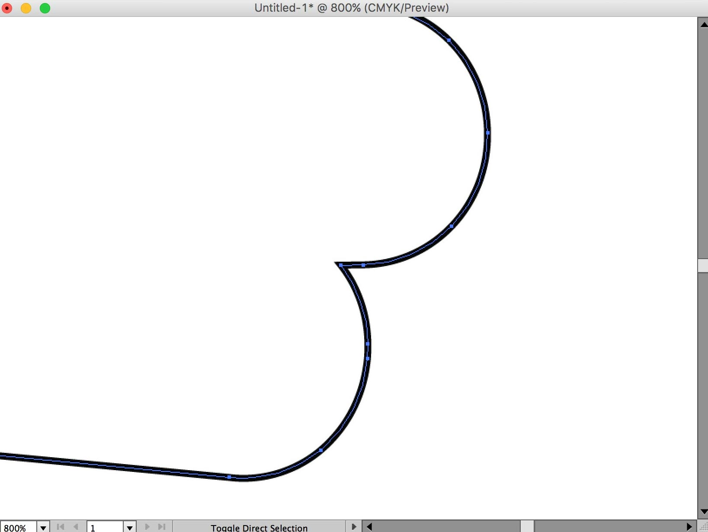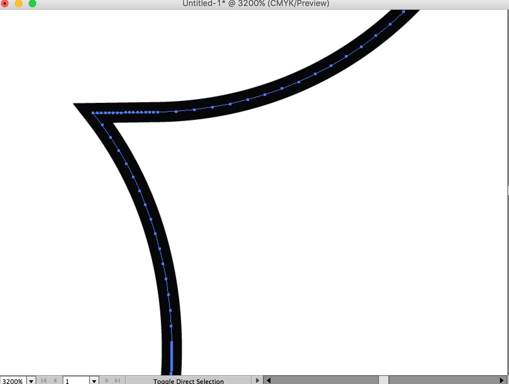
Zoom in if necessary to check anchor points are added. Look at the difference between two objects when anchor points are added(Before & After)
Keep in mind, that too many anchor points could make importing too much of a burden to computer. Think of each anchor points as seperate node you create in Eagle.
illustrator supports DXF files. For importing DXF files into Eagle, it recommended to be oldest version as R13/LT95. (Trying the newer version is fine, check with Eagle for experimental trial)
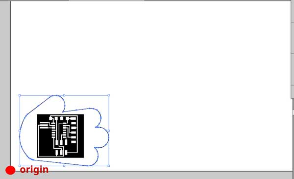
Position of the drawing shape must be LOWER LEFT of the page. otherwise the shape will be faraway from oring in the Eagle.
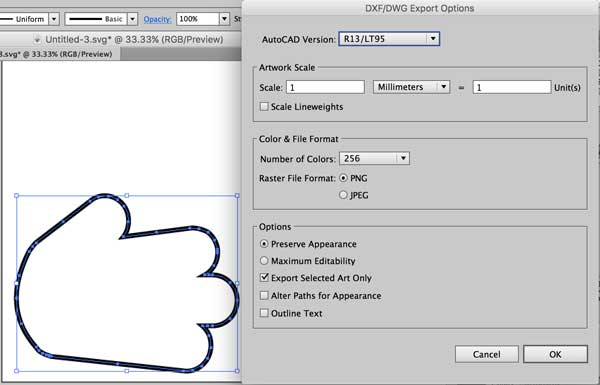
In Options, click Export selected Art Only.
Now we try special method to import vectors made from illustrator's DXF format (Note : it works fine with any other graphic design tools that can export DXF format). This is performed by the ULP (User language Programs) import_dxf_polygons_v4.ulp For any other ulps you can download from Cadsoft Eagle userfiles misc area.
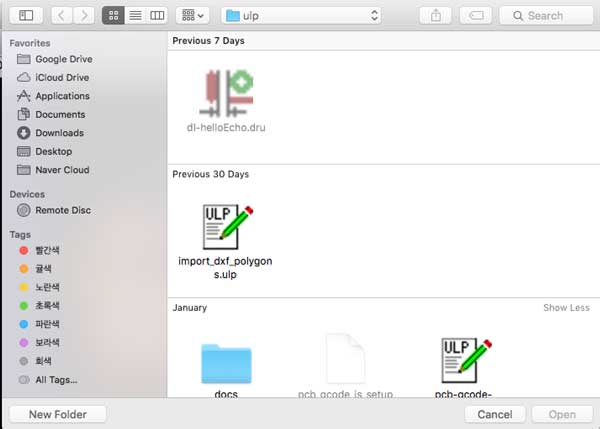
In Eagle, from the main window of the program, click the 'ULP' button on the toolbar or 'File > Run ULP'. Eagle will open up a dialog and you will have to navigate to location where you downloaded the 'import_dxf_polygons_v4.ulp' file.
Second job is to navigate to your DXF file and open until you get the main import dialog box.
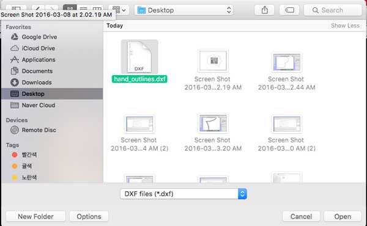
Here you can rescale, mirror or rotate the shape by giving it a number to angle or checing the msg box which says 'Mirror'.
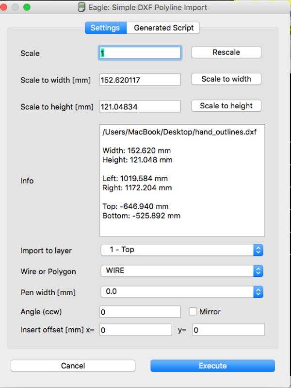
Reminder for settings
When you are done with options press 'Execute'.
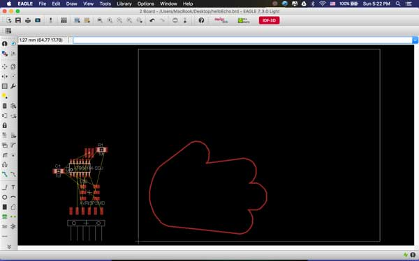
Normal hello echo-board can turned into shapes with freely drawn outlines.
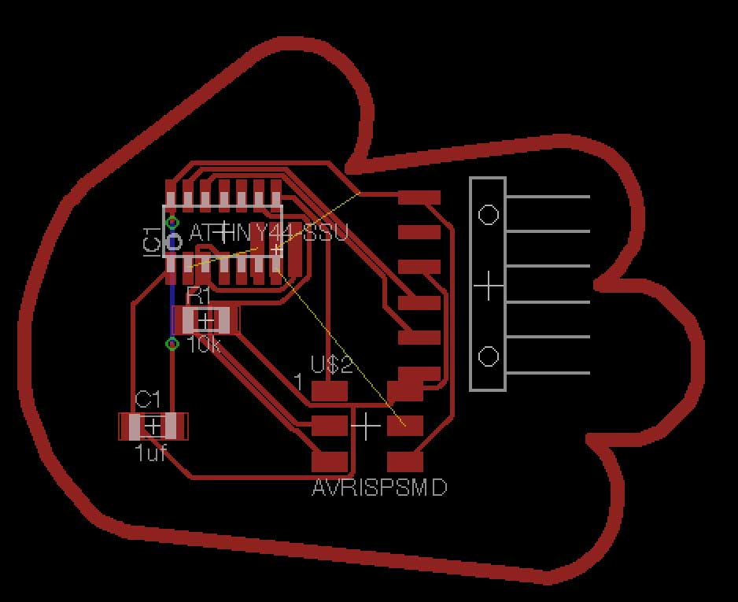
Now enjoy making customized pcb for your electronic design assignment.
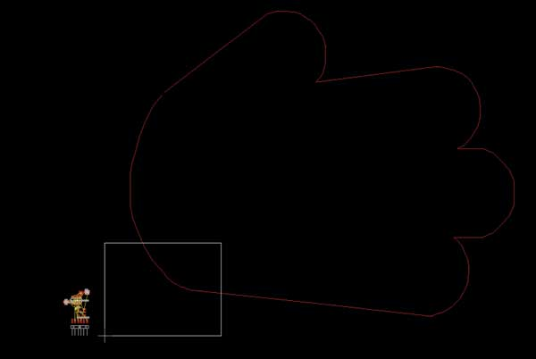
If not properly measured the dimension your outlines can outsize the canvas like above and at the same time, if you don't make appropriate pen width It's useless to make outlines.
It's not 100% accurate to make continuous outlines and there can be possiblity of having unjoined lines at some point. Easiest way is to make WIRES by manual.
All content © 2016 Yongwoo Song (except where otherwise noted) Some rights reserved.